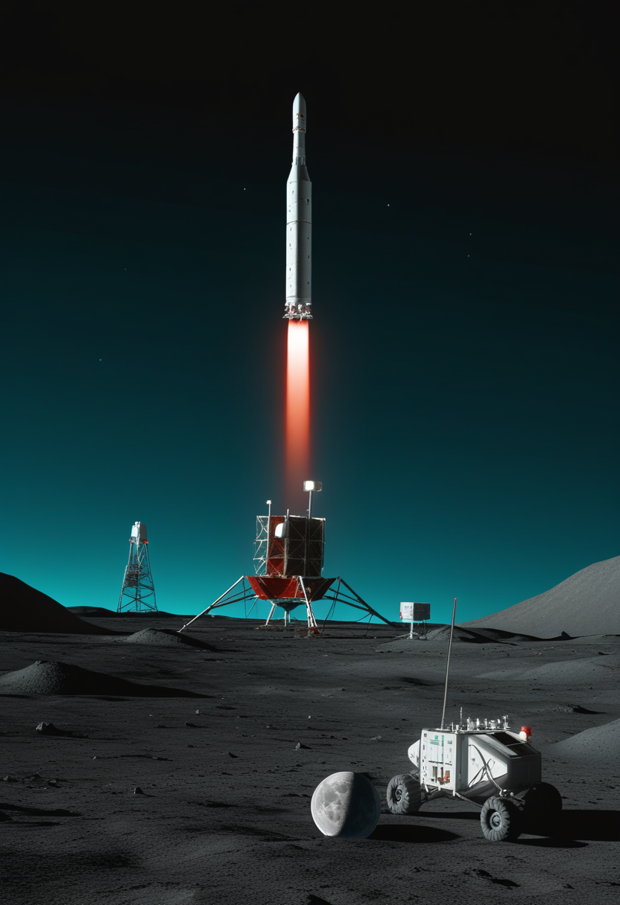
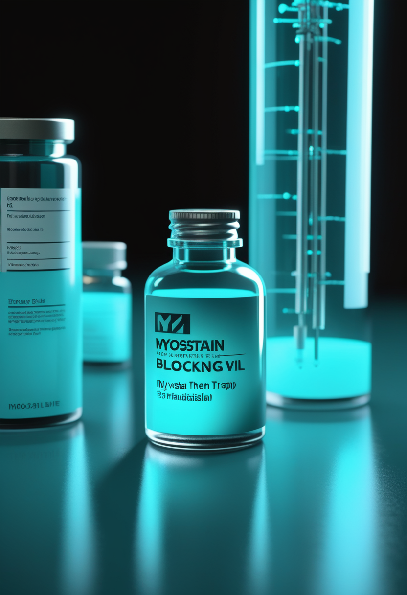
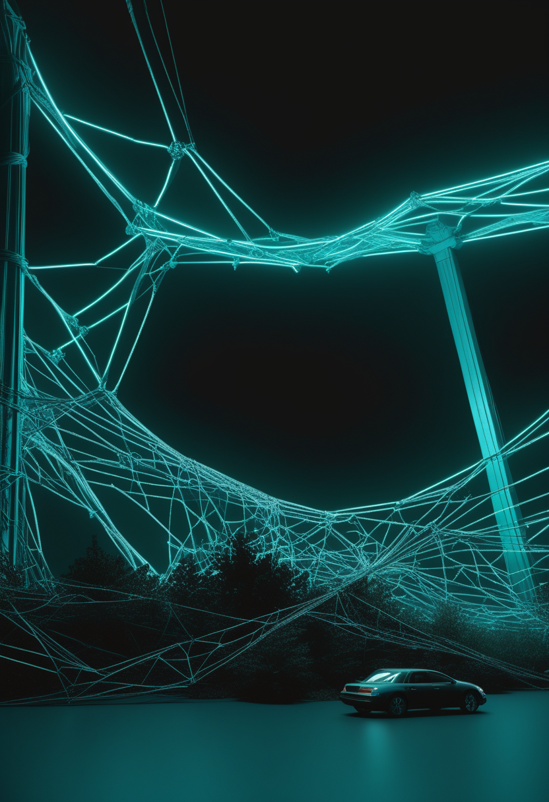
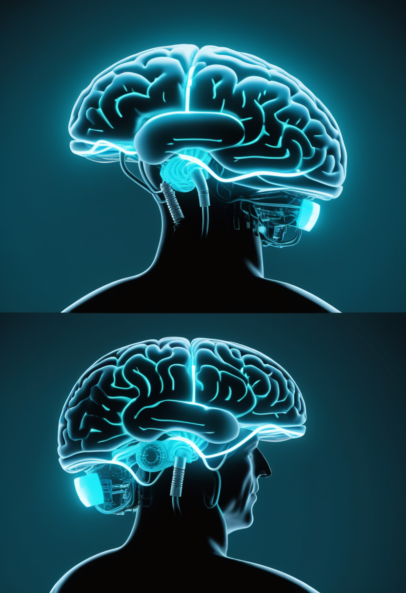
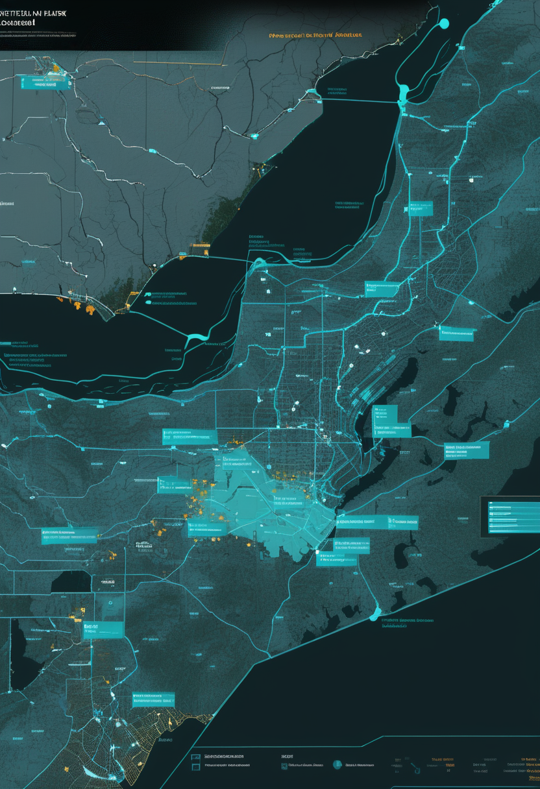
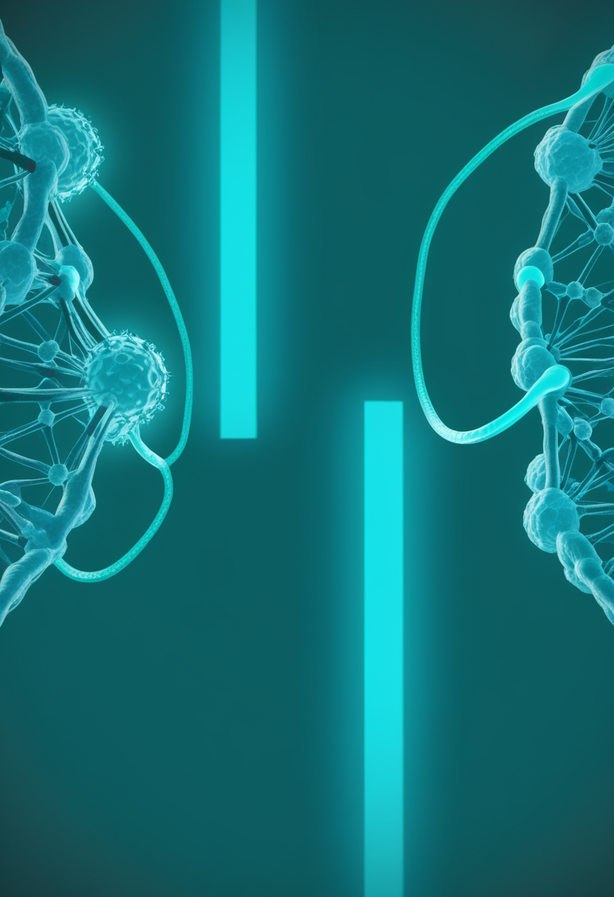
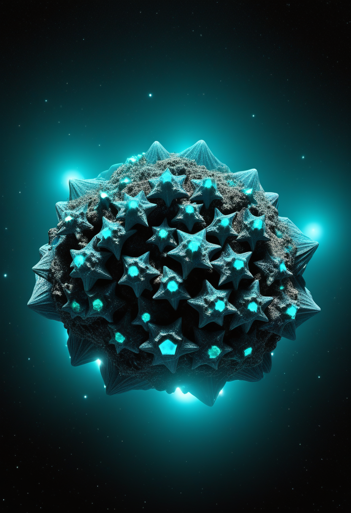

金曜日の便り。コンゴ民主共和国が8月19日に公表したデータによると、ブンディブジョ型エボラ出血熱は確定5,208例・死者2,476人に達し、730人が隔離入院下にある。史上最速で拡大する流行に対し、8月5日にModernaのmRNAワクチン候補、7月24日に英オックスフォード大学のワクチン候補が相次いで人体試験入りし、ワクチンも治療薬もなかった状況にようやく変化の兆しが見え始めた。同じ週、EUは西・中央アフリカのコレラ対応に230万ユーロの緊急人道支援を追加した。命の章では、筋力増強薬アピテグロマブがFDA承認(9月30日審査期限)に向けた製造施設の切り替えを終え、Cure SMAの報告書は進展の裏にある保険拒否や精神面の負担という残る格差を指摘した。自由の章では、埋込み型BCI・非侵襲型BCIが『臨床応用への共通の関門』を越えつつあるとする総説が発表され、Neuralinkはパーキンソン病やうつ病にも対応する新型手術ロボットを公開した。畏敬の章では、中国の嫦娥7号が8月24日の打ち上げに向けて最終準備を終え、ISSでは船外活動が時間切れでアンテナ交換を持ち越した。そして美の章では、氷河期のヒキガエルの新種、6,600万年前の恐竜の骨に残るコラーゲン、5億6,700万年前の化石が語る動物進化の起源が、それぞれの時代の記憶を今に伝えている ― 危機と対応、そして遠い記憶の発見が、同じ金曜日の朝に並走した。
コンゴ民主共和国が8月19日に公表した最新の状況報告によると、ブンディブジョ型エボラ出血熱は確定5,208例・死者2,476人に達し、前回8月18日発表(確定5,021例・死者2,378人)から187例・98人が積み増された。730人が現在も隔離入院下にあり、Africa CDCによれば管理下に置かれた警報1,265件のうち92%が24時間以内に調査され、接触者追跡率は影響を受けた州全体で84%に達している。史上最速で拡大する今回の流行に対し、ワクチンも特異的治療薬もない状況が続いていたが、8月5日にModernaが新型コロナワクチンと同じmRNA技術を用いたワクチン候補『mRNA-1469』の第1相試験をカナダで開始したと発表、7月24日には英オックスフォード大学とインド血清研究所が開発した『ChAdOx1 BDBV』も英国で治験入りした。ブンディブジョ型を標的とする初のワクチン候補が、拡大を続ける流行の渦中でようやく人の腕に届き始めている。

SMA治療薬候補『アピテグロマブ』を開発するScholar Rock社は8月17日、製造委託先のCatalent Indiana(Novo Nordisk傘下)施設についてFDAが4月の査察で『Official Action Indicated(重大な懸念あり)』に分類したことを受け、同施設を承認申請から除外し、既にFDA・EMA双方で良好な状態にある第二の充填・仕上げ施設に切り替えたと発表した。9月30日のFDA審査期限(PDUFA)は維持される見通しで、EU側もCHMP意見の遅延要因となっていた同じ施設問題の解消を欧州規制当局に報告する予定という。アピテグロマブはミオスタチンを阻害して筋力を高める仕組みの治療薬で、8月のMDA2026臨床科学会議では第3相SAPPHIRE試験の事後解析として、188人の非歩行型SMA2型・3型患者でHFMSEスコアの最小二乗平均差が1.8ポイント改善し、3ポイント超の改善を示した患者の割合は投与群30%・プラセボ群12.5%だったと報告された。効果は症状発現や治療開始から早い段階で投与を始めた患者ほど大きかったという。

Cure SMAが8月7日に発表した『State of SMA』最新報告書は、死亡率や診断年齢といった進展の指標だけでなく、治療にたどり着いた後も残る格差を浮き彫りにした。報告書によると、患者の約半数が治療または医療機器の保険請求拒否を経験し、成人患者の78%が精神的・感情的な健康への悪影響を報告している。さらに独身の成人患者の56%は、結婚によって公的給付(メディケイド等)の受給資格を失うことを懸念していると回答した。治療薬の選択肢が出そろい生存率が大きく改善した一方で、保険制度や社会保障制度の設計がその変化に追いついていない実態を、同じ報告書自身が示す形となった。
製造施設の切り替えという地味な決断がFDA承認への道を守り、進展の指標の裏では保険や社会保障の設計が取り残されている ― 命の章が今日伝えたのは、治療そのものの有無を超えて、それを実際に届け・使い続けられる仕組みづくりの段階に入ったSMAケアの現在地だった。
スイス発・米国にも拠点を置くNeurosoft Bioelectronicsは、伸縮性のあるソフト材料工学とAIを組み合わせた脳コンピュータインターフェース(BCI)の開発を加速するため、Skybound Venture Capital主導で750万ドルのオーバーサブスクライブド・シード資金を調達したと発表した。累計調達額は2,000万ドルを超える。同社の技術は耳鳴りやてんかんなど脳回路の異常が関わる疾患の機能回復を目指すもので、米UTHealth Houstonとオランダ・ユトレヒト大学医療センターで臨床試験を実施中、これまでに10人の患者で試験を行い、てんかん手術のガイドとして64チャンネルの柔らかく伸縮する脳インターフェースを用いた世界初の試験も含まれるという。今回の資金は、低侵襲な埋込み手技の実証と米国での商用化第一弾製品の準備に充てられる。

脳深部刺激(DBS)・脳コンピュータインターフェース(BCI)・音声人工装具といった埋込み型神経技術は、それぞれ別個の技術としてではなく『信号検出・復号・刺激または出力・電力とテレメトリ・長期的な臨床検証』という共通の閉ループ構造を持つ一つの分野として理解すべきだとする総説が8月19日、Frontiers in Neuroscience誌に掲載された。2010年1月から2026年6月までの英語論文をPubMed・Scopus・Web of Scienceで網羅的に調査した著者らは、この分野の実用化の速度を左右しているのは各技術固有の課題ではなく、これら共通段階に存在するボトルネックだと指摘する。臨床試験の参加者数が一桁から数十人規模へと拡大し、NeuralinkやSynchronが海外でも治験を始める中、技術を横断する視点からの整理が求められている。
Neuralinkは5月7日、次世代の外科手術ロボットが人間の脳のほぼあらゆる領域に電極糸を配置できるようになったと発表した。従来は運動機能の回復を目的とした運動野への埋込みが中心だったが、新型ロボットは硬膜を除去せず貫通させる形で電極を通し、心拍や呼吸による脳の微小な動きをリアルタイムで補正しながら、パーキンソン病・てんかん・うつ病といった疾患の治療にも対応できる設計になっているという。同社は2026年中の大量生産を目指しており、手術の高速化・安全性向上・ほぼ完全自動化を掲げるイーロン・マスク氏の方針のもと、埋込み手術を工業規模で行う体制づくりを進めている。
伸縮する軟らかい電極、埋込み技術を横断する共通理論、そして脳のほぼ全域に到達する手術ロボット ― 自由の章が今日示したのは、BCIが特定の症状や特定企業の競争を超えて、一つの成熟した基盤技術へと収斂しつつあるという流れだった。

コンゴ民主共和国政府が8月19日に公表した最新データによると、ブンディブジョ型エボラ出血熱は確定5,208例・死者2,476人に達し、前回発表(8月18日、データ8/16時点)から187例・98人が積み増された。730人が現在も隔離入院下にあり、151の保健地区のうち56地区が影響を受けている。Africa CDCの週次疫学情報報告によれば、対応チームが管理した警報1,265件のうち92.0%(1,164件)が24時間以内に調査され、275件の疑い例が確認例として検証されたという。接触者追跡率は影響を受けた州全体で84%となっており、史上最速で拡大したとされる今回の流行に対し、監視体制の解像度を高める地道な作業が続いている。

ワクチンも特異的治療薬もないとされてきたブンディブジョ型エボラウイルスに対し、初めてのワクチン候補が相次いで人体試験入りした。Modernaは8月5日、新型コロナワクチンと同じmRNA技術を用いた候補『mRNA-1469』の第1相試験をカナダの3施設で開始したと発表、健康な成人約80人を対象とする。同社のプログラムは感染症流行対策イノベーション連合(CEPI)が最大5,000万ドルを拠出するパートナーシップの一環。一方、英オックスフォード大学とインド血清研究所が開発した『ChAdOx1 BDBV』は7月24日、英国で第1相試験入りした。オックスフォード大学のチームはオックスフォード-アストラゼネカ製新型コロナワクチンと同様の技術を用い、わずか8週間でこのワクチン候補を開発したという。これまで1,650人以上の死者を出してきたこの株に対し、対応の柱がようやく接触者追跡・隔離に加えてもう一つ増えることになる。
欧州連合(EU)は8月17日、西・中央アフリカで越境拡大するコレラの流行に対応するため、ナイジェリア・カメルーン・中央アフリカ共和国・チャドの4カ国に230万ユーロの緊急人道支援を追加拠出すると発表した。UNICEFは今回の流行で最大の被害を受けているナイジェリアで年初来5万例超・死者338人、コンゴ民主共和国で3万400例超・死者700人近くに達していると報告しており、対応強化のため今後6カ月で1,500万ドルの追加資金を求めている。国境をまたぐ流行に対し、個々の国の対応能力だけでは追いつかない状況が続く中、EUの追加拠出は域内の医療体制と水・衛生インフラの立て直しに充てられる見通し。
初めて手にした92%という調査速度、初めて人の腕に届いたワクチン候補、そして初めて動いた追加の資金 ― 基盤の章が今日並べたのは、対応システムのあらゆる歯車が、史上最速の流行に少しずつ追いつこうとしている姿だった。
中国国家航天局は、月の南極で水氷を探査する無人探査機『嫦娥7号』と長征5号Y14型ロケットの組み合わせを8月19日に文昌宇宙発射場の発射エリアへ垂直移送したと発表した。打ち上げ窓は現地時間8月24日朝(米東部時間23日夜)に開く。探査機は周回機・着陸機・ローバーに加え、恒久的に太陽光の届かない永久影クレーターを跳躍しながら探査する小型ホッピング機を搭載する。月周回軌道への到達までに最大6日を要し、そこから2カ月かけて着陸準備を整え、11月の月面着陸を目指す計画だという。月の南極に直接着陸を試みるミッションとしては世界初となる見通しで、高精度な軟着陸や脚部歩行など複数の新技術の実証も掲げられている。
NASAとESAは、8月18日に実施したNASA宇宙飛行士Anil Menon氏とESA宇宙飛行士Sophie Adenot氏による6時間23分の船外活動で、国際宇宙ステーション(ISS)のZ1トラス上にある故障した高速通信アンテナの取り外しには成功したものの、電気ケーブルの取り外しとボルトの作業に想定以上の時間を要し、交換用アンテナの設置は時間切れで次回に持ち越されたと明らかにした。故障したアンテナは昨年11月以降NASAのデータ中継衛星を追尾できなくなっており、現在は予備の系統が高速通信を代替している。飛行管制チームは、交換作業を翌週火曜日に予定される次の船外活動で行うか、将来のミッションに先送りするかを検討中だという。なお、この船外活動はAdenot氏にとってフランス人女性として初めての船外活動となった。

NASA・ESA・CSAは、ジェイムズ・ウェッブ宇宙望遠鏡(JWST)による2026年8月のピクチャー・オブ・ザ・マンスとして、地球から7,500光年離れたカリーナ星雲(りゅうこつ座)内の彗星状球状体『トレジャーチェスト(宝石箱)』を初めて撮影した画像を公開した。強烈な紫外線環境の中に約70個の若い星が密集し、原始惑星系円盤を伴う様子がこれまでにない解像度で捉えられている。カリーナ星雲は全長約260光年に及び、ウェッブの最初期の観測対象となった『コズミック・クリフス』を含む、大質量星形成の全過程を間近で観測できる太陽系近傍で最も活発な星形成領域の一つ。今回の画像は、激しい紫外線が原始惑星系円盤を侵食しながらも、その中で新しい星と惑星が生まれ続ける様子を同時に伝えている。
24日に迫った月の南極への打ち上げ窓、時間切れで持ち越されたアンテナ交換、そして宝石箱のように輝く70個の若い星 ― 畏敬の章が今日並べたのは、綿密な計画も地道な微調整も、そして途方もない偶然の輝きも、すべて同じ宇宙という舞台の上で起きているという事実だった。
米ロサンゼルスのLa Brea Tar Pits(ラ・ブレア・タールピッツ)で1950年代に発掘されながら未同定のまま収蔵されていた化石標本から、氷河期の新種のスキアシガエル『Spea labreae』が識別されたとする論文が、Dr. Alberto Cruz氏とDr. Emily Lindsey氏らの研究チームにより8月4日、Journal of Vertebrate Paleontology誌にオンライン発表された。現生種のSpea hammondiiより一回り大きく、脆弱な骨格を持つ両生類がアスファルト層という特殊な環境下でのみ化石として残ったことが、70年越しの発見につながった。北米で確認された氷河期の絶滅両生類としては2例目という希少な発見で、同じ調査では、現在は米国南西部に生息しないメキシコハナガエルがかつてこの地域に生息していた初めての証拠も確認されたという。
英リバプール大学の研究チームが、米サウスダコタ州ヘルクリーク層から発掘された重さ22kgのエドモントサウルス(カモノハシ竜)の仙骨から、コラーゲン特有のアミノ酸ヒドロキシプロリンをタンデム質量分析法で検出したとする研究成果を発表した。蛋白質配列分析やクロスポーラライズ光顕微鏡による検証も行われ、化石化の過程で骨内の有機分子はすべて分解されるという約30年来の定説に一石を投じる結果となった。研究にはUCLAも参加しており、蛋白質が数千万年という時間を超えてどのように保存され得るのかは依然として解明されていないが、恐竜の骨がまだ語っていない記録を内部に秘めている可能性を示す成果として注目されている。
米自然史博物館・ダートマス大学・スタンフォード大学・ペンシルベニア州立大学の国際チームが、カナダ北西準州マッケンジー山脈の古い岩層(サートゥー・デネ族とメティス族の伝統的領土に位置)で100点以上のエディアカラ紀化石を発見し、その年代を約5億6,700万年前と特定した研究成果を、Science Advances誌に発表した。北米では未記録の6つの生物群が含まれ、線虫やクシクラゲ、刺胞動物といった現生動物グループと関連する種のほか、移動性生物ディキンソニアや、フニシアによるとみられる現存する最古の有性生殖の化石証拠も確認された。これにより、動物の移動と有性生殖の起源はこれまで考えられていたより500万〜1,000万年早い時期に遡ることになった。
70年前に収蔵庫で見過ごされていたカエルの骨、6,600万年の時を超えて残っていたコラーゲン、そして5億6,700万年前の化石が語る動きと生殖の起源 ― 美の章が今日示したのは、過去はどれだけ古くても、見る技術と見る目次第でまだ新しく語り直せるという事実だった。
コンゴ民主共和国政府が8月19日に発表したデータによると、ブンディブジョ型エボラ出血熱は確定5,208例・死者2,476人に達し、730人が隔離入院下にある。史上最速で拡大するこの流行に対し、8月5日にModernaのmRNAワクチン候補、7月24日に英オックスフォード大学のワクチン候補が相次いで人体試験入りし、ワクチンも治療薬もなかった状況にようやく変化の兆しが見え始めた。同じ週、EUは西・中央アフリカのコレラ対応に230万ユーロを追加拠出した。命の章では、筋力増強薬アピテグロマブがFDA・EMA双方の承認審査を維持すべく製造施設を切り替え、Cure SMAの報告書は進展の裏にある保険拒否や精神面の負担という残る格差を指摘した。自由の章では、伸縮する軟らかいBCI、埋込み型神経技術を横断する共通理論、脳のほぼ全域に到達する手術ロボットが、それぞれ異なる角度からBCIの成熟を示した。畏敬の章では、嫦娥7号の打ち上げ窓が8月24日朝に確定し、ISSでは船外活動が時間切れとなり故障アンテナの交換が来週へ持ち越された。そして美の章では、La Brea Tar Pitsの70年越しの新種発見、6,600万年前の恐竜の骨に残るコラーゲン、5億6,700万年前の化石が語る動物進化の起源が、それぞれの時代の記憶を今に伝えている ― 危機と対応、そして遠い記憶の発見が、同じ金曜日の朝に並走した。
では、また明日の朝に。 — JaH